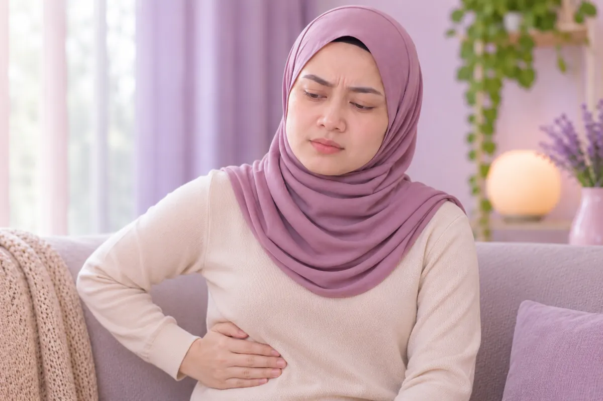

Liver, gallbladder & pancreas
58 conditions and symptoms
 Acute gallbladder inflammation (cholecystitis)
Acute gallbladder inflammation (cholecystitis) Acute hepatitis B
Acute hepatitis B Acute liver failure
Acute liver failure- Acute pancreatitis
- After-effects of gallbladder removal
 Alcohol-related liver disease
Alcohol-related liver disease- Autoimmune hepatitis
- Autoimmune liver disease
- Benign gallbladder tumour
- Benign liver tumour
- Bile duct dilation (choledochal cyst)
- Bile duct infection (cholangitis)
- Bile duct stones
- Bile duct stones inside the liver (intrahepatic)
- Bile duct stones outside the liver (extrahepatic)
- Biliary pancreatitis (gallstone pancreatitis)
- Budd-Chiari syndrome (blocked liver veins)
- Cholestatic jaundice
- Chronic gallbladder inflammation (cholecystitis)
- Chronic hepatitis B
- Chronic pancreatitis
- Cirrhosis of the liver
- Common bile duct stones
- Drug-induced liver injury
- Fatty liver
- Gallbladder inflammation
- Gallbladder polyp
- Gallstones
- Gallstones
- Hepatic encephalopathy (liver-related brain disorder)
- Hepatitis
- Hepatitis B carrier
- Hepatitis B, HBeAg-negative (small three positives)
- Hepatitis B, HBeAg-positive (big three)
- Hepatitis C
- Hepatitis D
- Hepatitis E
- Hepatitis with jaundice (icteric hepatitis)
- Hepatorenal syndrome
- Jaundice (yellow skin and eyes)
- Liver abscess
- Liver cyst
- Liver failure
- Liver fibrosis (scarring of the liver)
- Liver haemangioma (benign blood vessel tumour)
- Liver hydatid disease (echinococcosis)
- Mild fatty liver
- Moderate fatty liver
- Obstructive jaundice
- Overactive spleen (hypersplenism)
- Pancreatitis
- Poor liver function (liver insufficiency)
- Portal hypertension (high liver vein pressure)
- Severe fatty liver
- Spider naevus (spider angioma)
- Stubborn fluid in the belly (refractory ascites)
- Swollen veins in the oesophagus and stomach (varices)
- Wilson's disease (copper build-up)